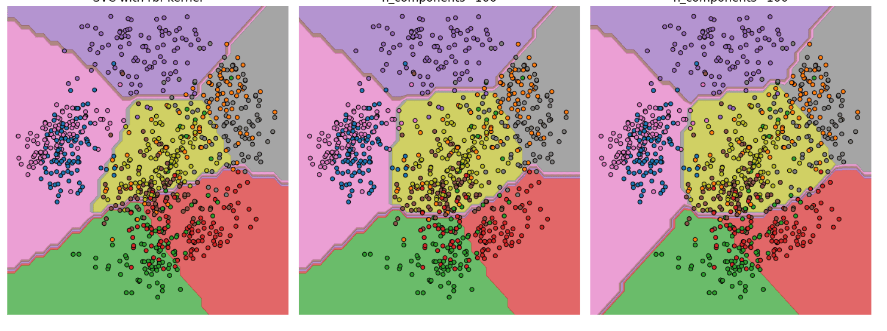
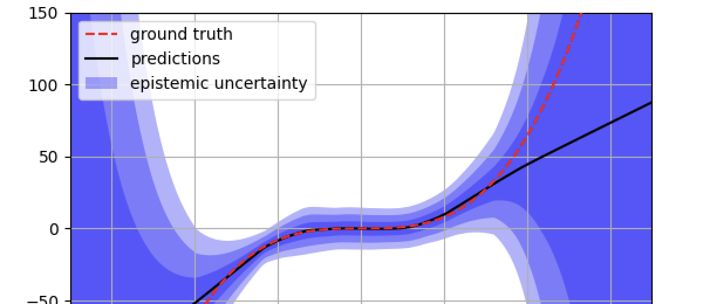
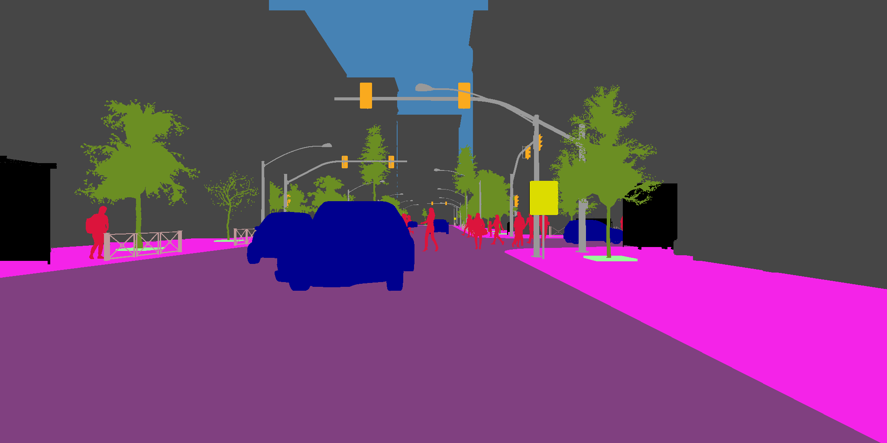
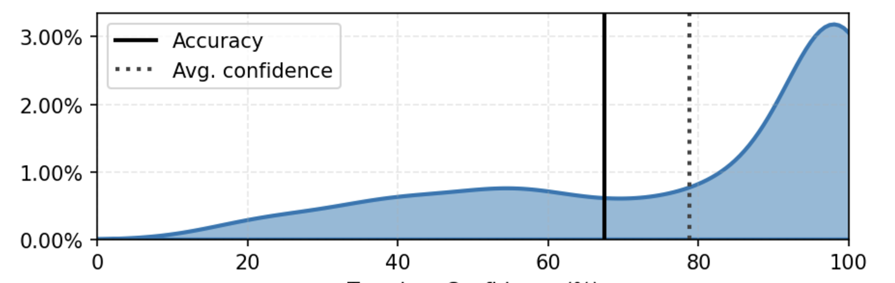
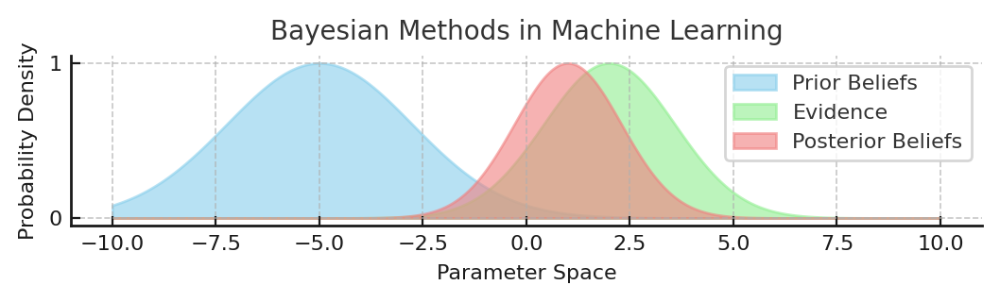
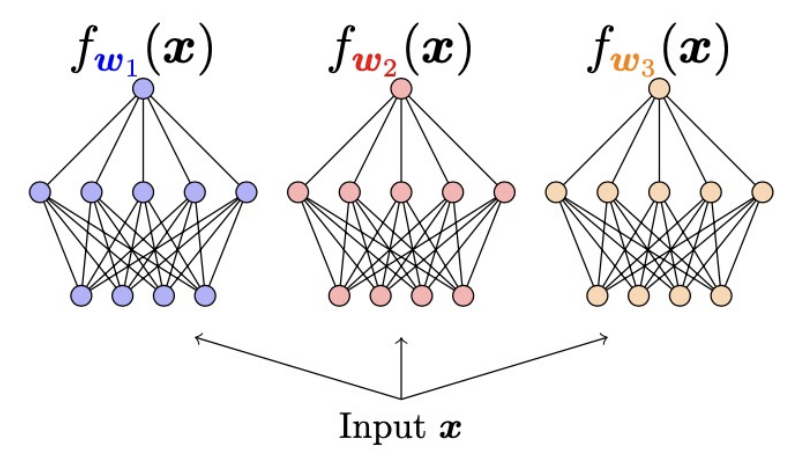

Classification
Identifying categories while quantifying uncertainty.
Applications: Risk-sensitive predictions, anomaly detection...
Algorithms: Deep Ensembles, Packed Ensembles, Bayesian Neural Networks

Regression
Predicting continuous-valued outputs with uncertainty bounds.
Applications: Forecasting, scientific analysis...
Algorithms: Deep Evidential Regression

Segmentation
Pixel-wise predictions with uncertainty metrics.
Applications: Image segmentation.
Algorithms: Deep Ensembles, Packed Ensembles,

Post-hoc Methods
Improving model predictions with post-hoc methods.
Applications: Risk management, decision-making systems...
Algorithms: Temperature Scaling, Conformal RAPS

Bayesian Methods
Bayesian-inspired approaches to estimate model uncertainty by treating parameters or predictions as probabilistic distributions.
Applications: Uncertainty quantification, decision-making under uncertainty, probabilistic predictions.
Algorithms: Monte Carlo Dropout, Variational Inference, MCBN

Ensemble Methods
Combining predictions from multiple models to improve accuracy and provide reliable uncertainty estimates.
Applications: Robust predictions, anomaly detection, improved generalization.
Algorithms: Deep Ensembles, Packed Ensembles
